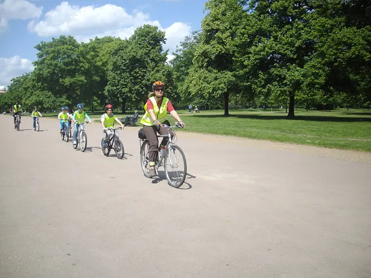
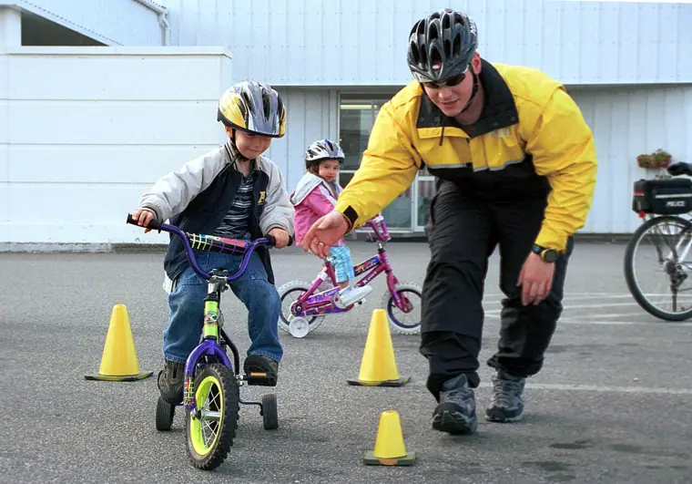
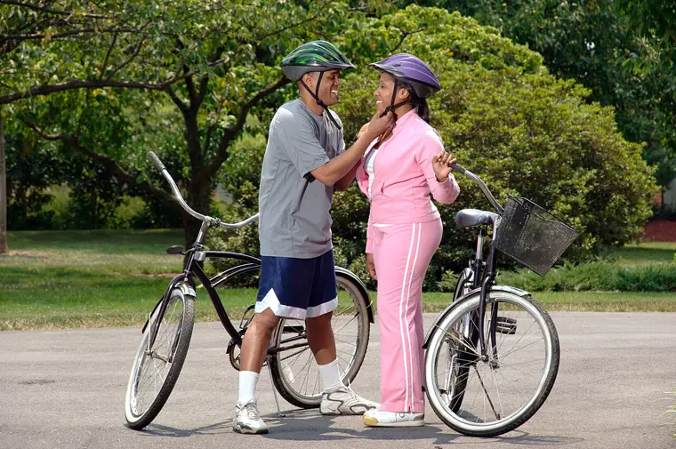
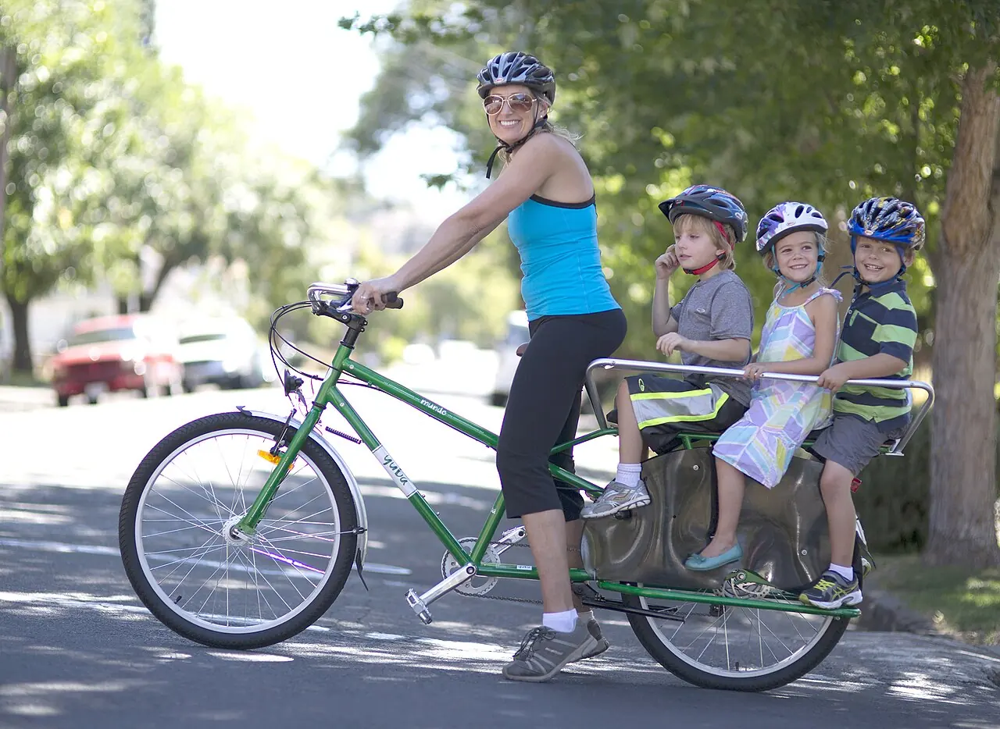
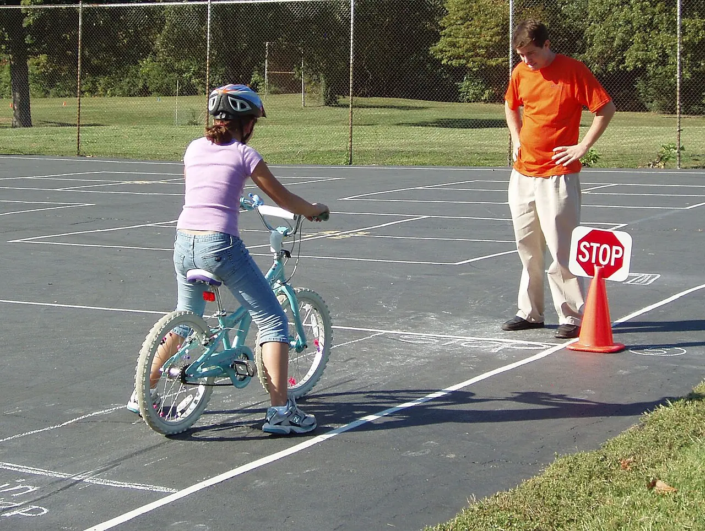
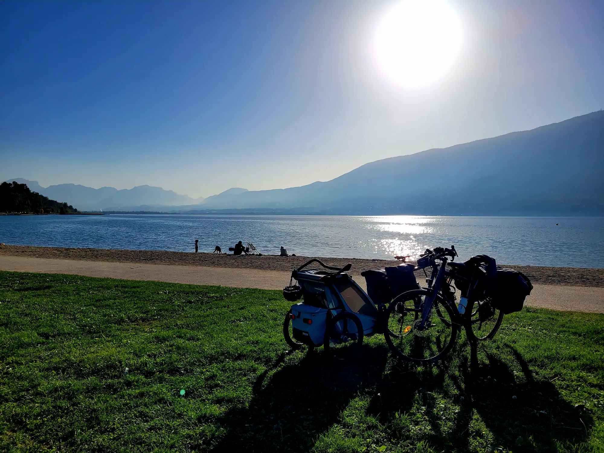

Grenoble, Isère
Le vélo, à votre rythme.
Balades guidées entre Vercors, Chartreuse et Belledonne. Cours pour apprendre aux enfants. Remise en selle tout en douceur pour celles et ceux qui ont laissé le vélo de côté.

Trois façons de rouler ensemble
Que vous veniez découvrir la région, apprendre ou reprendre confiance, chaque sortie est préparée pour les personnes qui y participent.

Balades guidées
De deux heures à la journée : les quais de Grenoble, la Belle Via, les châteaux, les cols. Six circuits pour tous les niveaux.
Voir les balades
Cours pour enfants
Trouver l'équilibre, apprendre à freiner, puis rouler en sécurité, de la cour au premier trajet en ville.
Voir les cours enfants
Remise en selle
Pour les seniors et toutes celles et ceux qui ont arrêté le vélo : retrouver ses repères, essayer l'électrique, ressortir sereinement.
Voir la remise en selle
Rouler ensemble, à tout âge.
Enfants, parents, grands-parents
Comment ça se passe
Simple, du premier message au retour de balade.
Vous m'écrivez
Une balade, un cours, un groupe : vous me dites qui roule, quand, et ce dont vous avez envie.
On prépare ensemble
Je vous propose un itinéraire ou un programme adapté, avec la durée, le niveau et le matériel à prévoir.
On roule
Vérification des vélos, réglage des casques, et c'est parti. On avance au rythme du plus tranquille.

La sécurité d'abord
Rouler l'esprit tranquille
Je prépare chaque sortie pour qu'elle soit agréable et sûre, quel que soit l'âge ou le niveau des participants.
- Casque obligatoirePour tous, enfants comme adultes, et bien réglé.
- Vélos vérifiésFreins, pneus et réglages contrôlés avant le départ.
- Itinéraires reconnusVoies vertes, pistes et routes calmes, repérées à l'avance.
- Petits groupesPour garder un œil sur chacun et s'adapter au rythme.
- Météo surveilléeEn cas de mauvais temps, la sortie est reportée.

Qui suis-je
Bonjour, je suis Cassandre
Je me forme pour devenir monitrice vélo, à Grenoble. Avec ma famille, nous voyageons à vélo depuis des années : la Corée du Sud, le Japon, l'Italie, et la Belle Via jusqu'aux falaises du Vercors, notre fille dans la remorque.
J'ai envie de partager ce que le vélo nous apporte : la liberté, le plaisir d'aller à son rythme, et ces paysages qu'on ne voit jamais vraiment depuis une voiture.
Cassandre
Groupes et structures
Écoles, centres de loisirs, résidences seniors, associations, hébergeurs, entreprises : j'interviens aussi pour vos groupes, sur demande.
Questions fréquentes
Faut-il être sportif ?
Non. La plupart des balades se font à plat, sur des voies vertes, avec des pauses. Pour les sorties plus longues, le vélo à assistance électrique met tout le monde à égalité.
Je n'ai pas de vélo, comment faire ?
Dites-le-moi au moment de la réservation : on organise ensemble une location adaptée, y compris en vélo électrique.
Le casque est-il obligatoire ?
Oui, pour tout le monde, enfants comme adultes. Je vérifie qu'il est bien réglé avant de partir.
Que se passe-t-il s'il pleut ?
En cas de pluie forte ou d'alerte météo, on reporte la sortie à une autre date.
Combien de personnes par sortie ?
Je privilégie les petits groupes, pour que chacun soit bien accompagné. Pour un groupe plus important, écrivez-moi et on organise la sortie en conséquence.
Quels sont les tarifs ?
Ils dépendent de la durée, du format et du nombre de participants. Écrivez-moi : je vous envoie une proposition détaillée, sans engagement.
Le vélo, pour tout le monde
Apprendre, reprendre, partager : à chaque âge sa façon de rouler, casque sur la tête.
Réserver
Parlons de votre sortie
Dites-moi qui vous êtes et ce dont vous avez envie. Je vous réponds personnellement pour organiser la balade ou le cours.